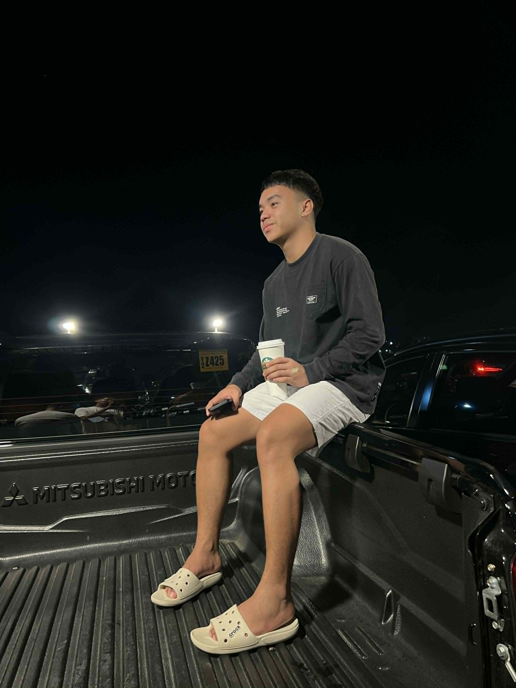
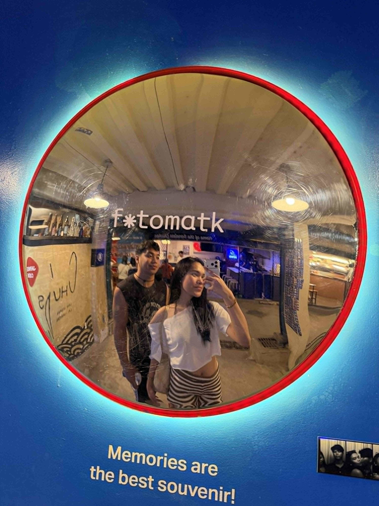

Travel Adventures

Capturing the Journey
Even though I just started to capture every moment of my travel, I really enjoy it. It has become a way for me to preserve memories of the places I visit and the experiences that shape who I am.

Quality Time
Beyond the scenery, what I value most is spending time with the ones I love during these trips. These moments of connection are what make traveling truly special and worth documenting.